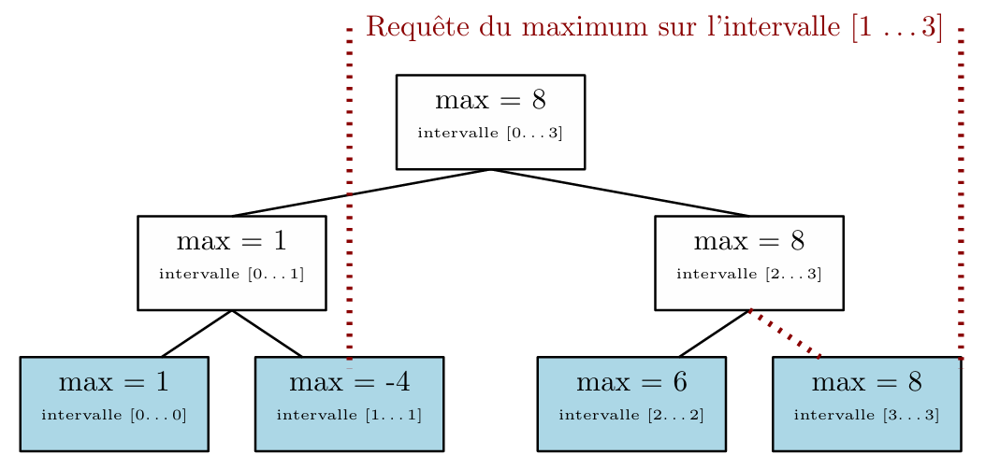

Arbre binaire OCaml
Dépôt githubPrintemps 2024 - Projet universitaire, OCaml, Git
Arbre binaire OCaml est un projet universitaire durant le second semestre de L2, qui consiste à développer une structure de données en OCaml afin de pouvoir avoir les informations sur une partie de l'arbre.
Pour ce projet, nous avions déjà une base existant qu'il fallait complété. Le sujet portait sur l'implémentation d'une structure de donnée en forme d'arbre, dans le but de connaître la somme, le nombre le plus présent, sous-tableau contigu de somme maximale dans un intervale de l'arbre.
Le défi de ce projet étaient l'approche fonctionnelle qui étais demander, il fallait aussi s'adapter à la base de code fourni, puis concevoir les algorithmes.
Ce projet à été réalise en groupe avec Nathan Rissot et Agathe Papineau, nous nous sommes réunie et nous avons réaliser ce projet en une journée.
